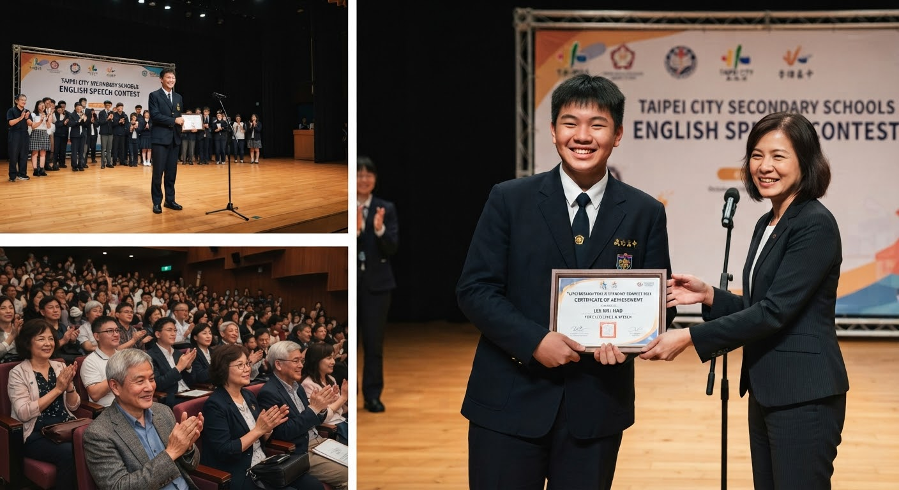

短頸鹿綜合短期補習班
學海無涯 · SHORT GIRAFFE CRAM SCHOOL
恭喜本班英語演講培訓班學生陳威豪同學（英文名 Jerry）， 在本屆「臺北市中等學校英語演講比賽」中一舉奪下特優佳績！ Jerry同學自升上國二後即加入本班英語演講培訓班， 在林老師的悉心指導下，從發音、台風到稿件邏輯逐步精進， 終於在此次比賽中脫穎而出，為校爭光。

頒獎典禮現場，Jerry同學上台領獎，台下師長與家長到場觀禮支持。
比賽當天，Jerry同學的家人也特地到場為他加油打氣， 看著孩子站上舞台自信地完成演講，台下掌聲不斷，場面溫馨感人。
短頸鹿英語演講培訓班長年耕耘學生口語表達能力， 近年來已培育多位學生在市級、全國級英語演講比賽中獲獎， 歡迎家長為孩子報名，一同培養孩子的自信與國際溝通力！
💬 Nosebook 留言外掛